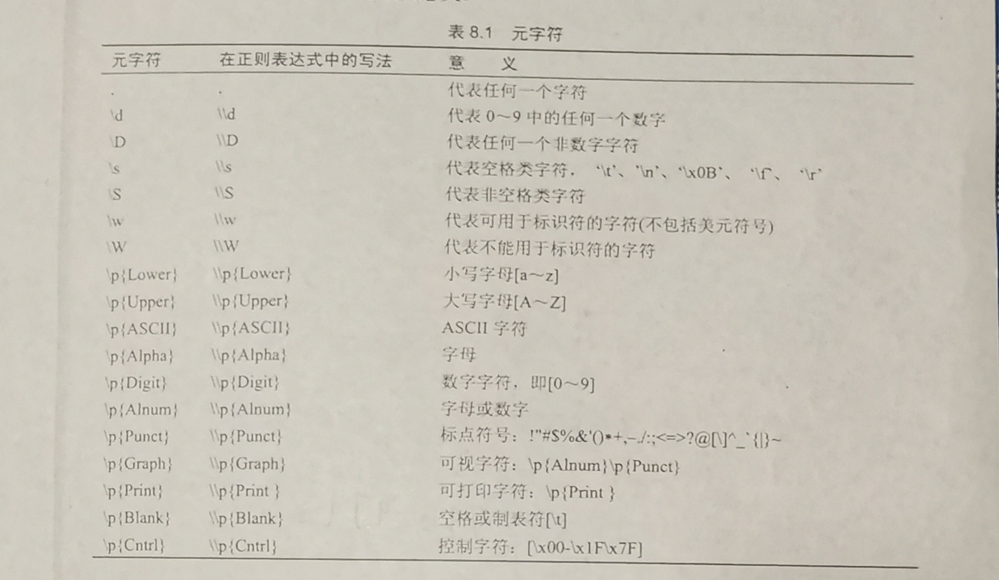

java实用类 [toc]
String类 概述 String类在java.lang 包中，可以直接使用。由于String类在定义时声明时被final 修饰，所以String类不能被继承。
实例化 字符常量 被双引号包裹的数据
1 2 3 4 5 6 7 8 public class M1 public static void main (String[] args) System.out.println("hello" ); System.out.println("你好" ); String str = "hello" ; } }
字符串对象 使用new 关键字创建一个String对象
1 2 3 4 5 6 7 public class M1 public static void main (String[] args) String str1 = new String("hello" ); System.out.println(str1); } }
字符串并置 字符串并置指定就是字符串拼接，如"123"+"456"的结果为123456。
需要注意的是，在字符串并置操作中，如果都是字符串常量，则结果被存放在常量池(堆)中，否则在非常量池中。
这里用==(比较两个字符串的引用)来验证
1 2 3 4 5 6 7 8 9 10 11 12 13 14 15 16 public class M1 public static void main (String[] args) String hello = "你好" ; String testOne = "你" +"好" ; System.out.println(hello == testOne); System.out.println("你好" == testOne); System.out.println("你好" == hello); String you = "你" ; String hi = "好" ; String testTwo = you + hi; System.out.println(hello == testTwo); String testThree = you + hi; System.out.println(testTwo == testThree); } }
常用方法 length() 功能：返回字符串中的字符个数
1 2 3 4 5 6 7 public class M1 public static void main (String[] args) String hello = "java 你好" ; System.out.println(hello.length()); } }
equals() 功能：判断两个字符串中的字符序列是否相等
1 2 3 4 5 6 7 8 9 public class M1 public static void main (String[] args) String str1 = "java 你好" ; String str2 = new String("java 你好" ); System.out.println(str1 == str2); System.out.println(str1.equals(str2)); } }
注意和==区分
在实际应用中，更看重字符串两者的实体是否相同，而不是引用是否相同。
startsWith()和endsWith() 功能：判断字符串中的字符序列是否以指定值开头（startsWith方法 ）或结尾（endsWith方法 ）
1 2 3 4 5 6 7 8 9 10 public class M1 public static void main (String[] args) String str = "你好 java" ; System.out.println(str.startsWith("你好" )); System.out.println(str.startsWith("hello" )); System.out.println(str.endsWith("java" )); System.out.println(str.endsWith("JAVA" )); } }
compareTo() 功能：按ascii码值(unicode码值)逐位比较两个字符串序列的大小(比较规则见API)
1 2 3 4 5 6 7 8 9 public class M1 public static void main (String[] args) String str = "abc" ; System.out.println(str.compareTo("abc" )); System.out.println(str.compareTo("Abc" )); System.out.println(str.compareTo("bbc" )); } }
compareToIgnoreCase()**方法的功能和 compareTo()**方法功能类似，区别在于前者忽略大小写。
1 2 3 4 5 6 7 public class M1 public static void main (String[] args) String str = "abc" ; System.out.println(str.compareToIgnoreCase("ABC" )); } }
比较两个字符串中的字符串序列是否相等可以使用equals()方法，也可以看compareTo()方法的返回值是否为0。
程序例题：使用campareTo()方法对字符串数组中的元素排序。
1 2 3 4 5 6 7 8 9 10 11 12 13 14 15 16 17 18 19 20 21 22 23 24 25 26 27 28 29 30 31 class SortString public static void sortString (String[] str) for (int i = 0 ;i<str.length-1 ;i++){ for (int j = i+1 ;j<str.length;j++){ if (str[i].compareTo(str[j])>0 ){ String s = str[i]; str[i] = str[j]; str[j] = s; } } } } } import java.util.Arrays;public class M1 public static void main (String[] args) String[] str1 = {"abandon" ,"desert" ,"supply" ,"unique" ,"shrink" }; SortString.sortString(str1); for (int i = 0 ;i < str1.length;i++){ System.out.print(str1[i]+" " ); } System.out.println(); String[] str2 = {"diploma" ,"worthy" ,"deforestation" ,"forest" }; Arrays.sort(str2); for (int i = 0 ;i < str2.length;i++){ System.out.print(str2[i]+" " ); } } }
contains() 功能：判断字符序列中是否包含另一字符序列。
1 2 3 4 5 6 7 8 public class M1 public static void main (String[] args) String str = "java hello" ; System.out.println(str.contains("java" )); System.out.println(str.contains("ahello" )); } }
indexOf()和lastIndexOf() 功能：
indexOf()：一个字符序列在另一个字符序列首次出现的位置
lastIndexOf()：一个字符序列在另一个字符序列最后一次出现的位置
1 2 3 4 5 6 7 8 9 10 11 public class M1 public static void main (String[] args) String tom = "I am a good cat" ; System.out.println(tom.indexOf("a" )); System.out.println(tom.indexOf("a" ,2 )); System.out.println(tom.indexOf("a" ,3 )); System.out.println(tom.lastIndexOf("a" )); System.out.println(tom.lastIndexOf("a" ,4 )); } }
substring() 功能：截取一个字符串序列并返回
1 2 3 4 5 6 7 8 public class M1 public static void main (String[] args) String tom = "我喜欢篮球" ; System.out.println(tom.substring(0 ,3 )); System.out.println(tom.substring(1 ,3 )); } }
trim() 功能：去掉字符串序列两边的空格
1 2 3 4 5 6 7 public class M1 public static void main (String[] args) String tom = " 我喜 欢 篮球 " ; System.out.println(tom.trim()); } }
字符串与基本数据类型的转换 字符串转基本数据类型
1 2 3 4 5 6 Byte.parseByte() Short.parseShort() Interger.parseInt() Long.parseLong() Float.parseFloat() Double.parseDouble()
基本数据类型转字符串
对象的字符串表示 调用对象的toString()方法可以获得字符的字符串表示
一般对象的字符串表示为：
创建对象的对象名@内存地址的字符串表示
通过重写object的toString()方法可以自定义对象的字符串表示。例如String对象和Date对象都重写了此方法。
1 2 3 4 5 6 7 8 9 10 11 12 13 14 15 16 17 18 19 20 21 22 public class TV String name; double price; TV(String name,double price){ this .name = name; this .price = price; } public String toString () return "品牌：" +name+";价格：" +price; } } public class M1 public static void main (String[] args) TV tv = new TV("长虹" ,2289.23 ); System.out.println(tv); Date today = new Date(); System.out.println(today); } }
字符串与字符数组和字节数组的相互转换 字符串与字符数组的转换 字符数组转字符串 字符串有两个构造方法用于将字符数组转为字符串
整个字符数组转为字符串：public String(char[] value)
1 2 3 char [] c = {'我' ,'喜' ,'欢' };String str = new String(c); System.out.println(c);
字符数组中的一部分转为字符串：public String(char[] value,int offset,int count)
1 2 3 char [] c = {'我' ,'喜' ,'欢' };String str = new String(c,1 ,2 ); System.out.println(str);
字符串转字符数组 getChars()方法
public void getChars(int srcBegin,int srcEnd,char[] dst,int dstBegin)
srcBegin：字符串开始位置
srcEnd：字符串结束位置+1
dst：字符数组对象
dstBegin：字符数组开始位置
1 2 3 4 5 6 7 8 9 public class M1 public static void main (String[] args) String str = "hello java" ; char [] c = new char [10 ]; str.getChars(5 ,10 ,c,0 ); System.out.println(c); } }
toCharArray()方法
public char[] toCharArray()
1 2 3 4 5 6 7 8 9 public class M1 public static void main (String[] args) String str = "hello java" ; char [] c; c = str.toCharArray(); System.out.println(c); } }
字符串与字节数组的转换 字节数组转字符串 常用有两个构造方法
public String(byte[] bytes)
public String(byte[] bytes,int offset,int length)
字符串转字节数组 public byte[] getBytes()
public byte[] getBytes(Charset charset)
1 2 3 4 5 6 7 8 9 public class M1 public static void main (String[] args) byte [] b = "hello java" .getBytes(); System.out.println("数组b的长度为：" +b.length); String str = new String(b,6 ,4 ); System.out.println(str); } }
正则表达式 概念

我们可以用[]来自定义一个元字符。
比如[a-zA-Z]表示匹配所有的字母、[0-2]表示匹配数字0、1、2。
常用方法 public boolean matches(String regex)
作用：判断字符序列是否与给定的正则表达式匹配
例题：只允许用户字母、数字、下划线，输入其它的字符则提示非法输入
1 2 3 4 5 6 7 8 9 10 11 12 13 14 15 import java.util.Scanner;class Example public static void main (String[] args) Scanner scanner = new Scanner(System.in); String regex = "[a-zA-Z|0-9|_]+" ; String str = scanner.nextLine(); if (str.matches(regex)){ System.out.println("合法输入" ); }else { System.out.println("非法输入" ); } } }
public String replaceAll(String regex,String replacement)
作用：匹配字符序列中符合正则表达式的部分，并替换为replacement 。
例题：将用户输入的非法字符替换为空。非法字符英文状态下的单引号和双引号
1 2 3 4 5 6 7 8 9 10 11 12 13 import java.util.Scanner;class Example public static void main (String[] args) Scanner scanner = new Scanner(System.in); String regex = "['|\"]" ; String str = scanner.nextLine(); str = str.replaceAll(regex,"" ); System.out.println("您的输入为：" ); System.out.println(str); } }
public String[] split(String regex)
作用：根据正则拆分指定的字符串
例题：判断一句话中的单词数量
1 2 3 4 5 6 7 8 9 10 11 12 13 14 import java.util.Arrays;class Example public static void main (String[] args) String str = "Today,I learned new knowledge about Java." ; String regex = "[[.]|,|\\s]" ; String[] words = str.split(regex); System.out.println("单词个数为：" +words.length); System.out.println("单词为：" + Arrays.toString(words)); } }
输出：
1 2 单词个数为：7 单词为：[Today, I, learned, new, knowledge, about, Java]
需要注意的是，spite方法认为和正则表达式相匹配的前面的字符序列是一个单词。如果和正则表达式相匹配的字符在最前面或者是两个匹配字符相邻，则结果中会加上空字符”“。所以，如果String str = "Today, I learned new knowledge about Java.";(空格和逗号相邻)，则程序的输出为：
1 2 单词个数为：9 单词为：[Today, , , I, learned, new, knowledge, about, Java]
String类做实参 参考：https://www.cnblogs.com/tianzibobo/articles/3395350.html
Scanner类 StringBuffer类 StringBuffer类与String类不同，String对象的实体是不可改变的，若想改变String对象的实体，则应指向一个新的引用。而StringBuffer对象的实体的空间会动态改变来存储变成字符序列。
构造方法 public StringBuffer()
构建一个空序列、初始容量为16个字符的对象
public StringBuffer(int capacity)
构建一个空序列、初始容量为capacity个字符的对象
public StringBuffer(String str)
构建一个指定字符序列，初始容量为str长度+16个字符的对象
常用方法 length方法 public int length()
功能：返回对象中实体长度
capacity方法 public int capacity()
功能：返回对象的容量
append方法 public StringBuffer append(Object obj)
功能：将字符序列追加到对象后面，并返回对象的引用
charAt方法 public char charAt(int index)
功能：返回对象第index+1个字符
setCharAt方法 public void setCharAt(int index,char ch)
功能：将对象第index+1个字符替换为ch
insert方法 public StringBuffer insert(int offset,String str)
功能：将str插入到对象第offset+1个字符后
此外，该方法还支持将不同的数据类型转换为String对象插入到StringBuffer对象中
reverse方法 public StringBuffer reverse()
功能：将对象的字符序列的倒叙，并返回该对象的引用
delete方法 public StringBuffer delete(int start,int end)
功能：删除对象中从一个字符序列，并返回一个对象的引用。该字符序列从对象的第start+1个字符开始截取end-start个字符
replace方法 public StringBuffer replace(int start,int end,String str)
功能：将对象中的某一字符序列替换为str，并返回一个对象的引用。被替换的字符序列从对象的第start+1个字符开始截取end-start个字符
Date类和Calendar类 两个类在java.util包中，需要导入使用。两个类的对象可用于处理时间和日期相关的数据。
Date类 构造方法 public Date()
使用该构造方法构造的对象存储的是当前日期
public Date(long date)
使用该构造方法构造的对象存储的日期是距1970年1月1日0时+date毫秒(1000毫秒=1秒)。
1970年1月1日0时是格林威治时间，而如果本地时间为北京时区的话，应该从1970年1月1日8时算起。
Calendar类 public abstract class Calendar extends Object implements Serializable, Cloneable, Comparable<Calendar>
由于Calendar类是一个抽象类，因此不能直接被实例化。不过我们可以调用Calendar类中的getInstance()方法来实例化一个Calendar对象。
public static Calendar getInstance()
Calendar对象可以调用以下方法将日历翻到任何一个时间
1 2 3 public final void set(int year,int month,int date) //精确到天 public final void set(int year,int month,int date,int hourOfDay,int minute) //精确到分钟 public final void set(int year,int month,int date,int hourOfDay,int minute,int second) //精确到秒
public int get(int field)
get()方法可以获取当前日期中的某一个值(年、月、日等)，field是类中的属性。
例：
1 2 3 4 5 6 7 8 public class M1 public static void main (String[] args) Calendar date = Calendar.getInstance(); System.out.println(date.get(Calendar.MONTH)); System.out.println(date.get(Calendar.DAY_OF_WEEK)); } }
注意：MONTH是Calendar类中的一个静态常量。由于Calendar类是一个抽象类，因此改变一个日历中的MONTH值并不影响另一个日历中的MONTH值。其它量也同理。
public long getTimeInMillis()
功能：该方法返回当前时间距离格林威治时间的毫秒数，如果是本地时间是北京时间，则返回距1970年1月1日8时的毫秒数
附：